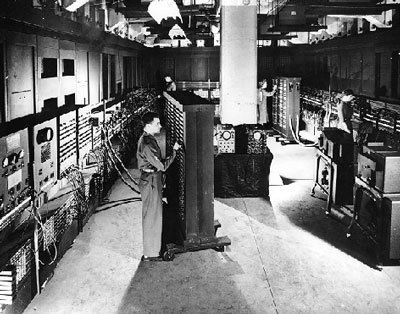

| ENIAC | |
 Acronym for Electronic Numerical Integrator And The ENIAC, weighing 30 tons, using 200 kilowatts of electric power and consisting of 18,000 vacuum tubes, 1,500 relays, and hundreds of thousands of resistors, capacitors, and inductors, was completed in 1945. In addition to ballistics, the ENIAC's field of application included weather prediction, atomic-energy calculations, cosmic-ray studies, thermal ignition, random-number studies, wind-tunnel design, and other scientific uses. The ENIAC soon became obsolete as the need arose for faster computing speeds. |
|
©2006. I.T Encyclopedic Dictionary. Program designed and created by: Arjay C. Nacion |
|
Created exclusively for Mabini Colleges. |
|